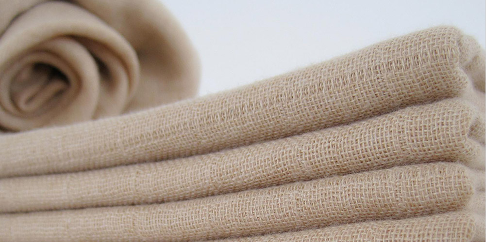

—— 品牌动态 ——
BRand BYANADICS
长江梦最新产品出炉
2016.12.12
公司坚持以市场为导向，以创新为动力，以质量求生存，以发展壮大的治理理念，一坨研发中心平台，积极探索绿色发展新路径，力争打造成为西南地区乃至全国组资源深度加工标杆行业。
公司坚持以市场为导向，以创新为动力，以质量求生存，以发展壮大的治理理念，以研发中心平台，积极探索绿色发展新路径，力争打造成为西南地区乃至全国组资源深度加工标杆行业

上一篇：
XXXXXXXXXXXXXXXX
下一篇：
XXXXXXXXXXXXXXXX